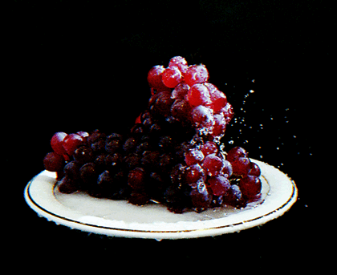

Balsamic Roasted Grapes
A surprisingly delicious treat! Easy to make, and a hit with everyone who
has tried them! Pairs well with wine and cheese.

Ingredients
- 3 cups red or green grapes olive oil
- 1 tablespoon chopped fresh thyme
- 1 tablespoon chopped fresh oregano
- 1 tablespoon balsamic vinegar
- taste salt and ground black pepper to taste